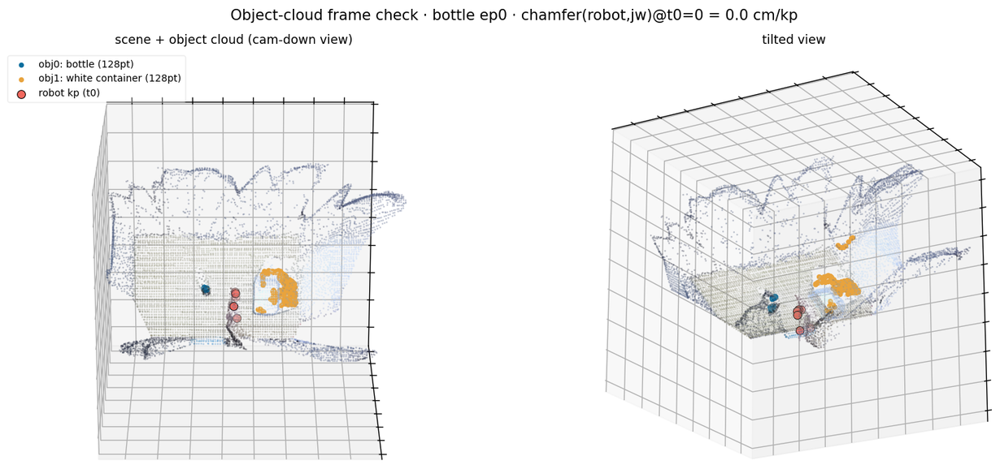
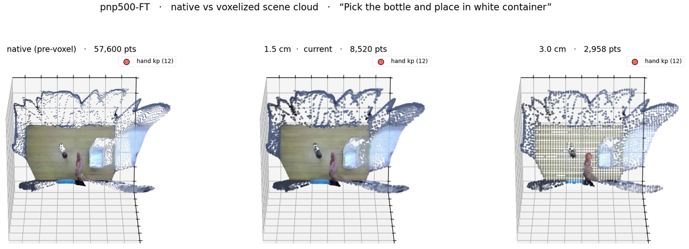

01The gap vs DPP
Two facts reframed the plan after reading both pipelines end to end. Language was already there; the real missing input is a dedicated object cloud.
| Input | DPP (baseline) | Dex-PointWAM (current) |
|---|---|---|
| Scene geometry | — | full VGGT-Omega cloud (PTv3) |
| Target object cloud | ✓ M=4 slots × 128 pts, PointNet | ✗ none — object lost in scene |
| Language instruction | MiniLM 384-d (FiLM) | ✓ CLIP text, DiT cross-attn |
| Object-name semantics | MiniLM per-object, slot-paired | ✗ none |
- ✓Language is not the gap.Dex-PointWAM already feeds the instruction through a frozen
openai/clip-vit-large-patch14text tower into the DiT via cross-attention. DPP's own text embedding is a sentence encoder (MiniLM), not an LLM — the only LLM in DPP (Qwen3-VL) is used to detect objects for segmentation, not to embed language. - →Object geometry is the gap.DPP gets a segmented cloud per object in dedicated slots; Dex-PointWAM's deploy bridge even reserves an
obj_ptsfield but sends zeros and discards it. The target object is never handed to the model as a distinct entity.

joints_worldspace to 0.0 cm, so the object clouds land exactly on their objects. This isolated, identity-tagged geometry is what the model is currently missing.02Scene resolution — and why the object gets lost
Before changing anything, a sanity check the plan depends on: is the 1.5 cm voxel too coarse or too fine? Reconstructed the native cloud from the stored depth and compared it to the current 1.5 cm grid and a coarser 3.0 cm. Verdict: 1.5 cm is the right call — object structure survives, 3.0 cm destroys it.


- ✓1.5 cm is appropriate — keep it.At 1.5 cm the object and hand keep their shape with ~7–9 k points/scene (well under the 12 k cap); 3.0 cm reduces the object to a handful of points. Voxel size is not the problem.
- ·But scene resolution ≠ object resolution.A dedicated object-only cloud (128 pts on the object alone, isolated) gives far more grasp-relevant geometry than the object's handful of points buried in the ~1–2 % it occupies of the scene grid.
03Architecture change
Two additions (green), both feeding the existing predictor. The object cloud goes through a new per-object PointNet; object names reuse the CLIP encoder already in the model — no new language weights.
04Experiment design — two tracks
A fast track to get signal within the 24 h, and the proper full-pretrain track behind it. PnP-500 already has DPP-computed object clouds, so the fast track needs no new segmentation.
| Track B — fast validation | Track A — main (from PT) | |
|---|---|---|
| Idea | object cloud at finetune only | object cloud from EgoDex pretrain |
| Init | EgoDex-PT ckpt, object head fresh | from scratch |
| Object clouds | PnP-500 object_points_3d (ready) | generate on EgoDex (Qwen3-VL→SAM3) |
| Cost | hours — adapter + FT + sim eval | full PT run |
| Answers | does the object cloud move the grasp? | the "done right" version |
| Component | Value |
|---|---|
| Object cloud | M=4 slots (2 real: object + bin) × 128 pts (DPP object_points_3d) |
| Object encoder | per-object PointNet (set-based, count-invariant) |
| Object semantics | object names → existing frozen CLIP text encoder, slot-paired |
| Language | unchanged — same CLIP encoder as the task instruction |
| Voxel / scene cap | unchanged — 1.5 cm · 12 k pts (validated §02) |
| Eval | OpenArm Isaac sim · bottle · vs DPP ≈27% · 30-min monitor |
05Action items
Ordered; Track B first. Model files are edited directly (this PointWAM clone is local, single-user).
- 1Plumb PnP-500 object clouds into the WDS.Write
object_points(M×128×3) +object_names+ slot mask into each sample from DPP'sobject_points_3d; extend the data pipeline / decoders / collate to carry them. - 2Add the object path to the model.Per-object PointNet encoder → object tokens into the DiT geometry stream; object names → CLIP → slot-paired semantic; whitelist the new config keys.
- 3Track B run.Finetune from the EgoDex-PT ckpt with the object head fresh; sim-eval on bottle vs DPP; 30-min monitor over 24 h.
- 4PT-only zero-shot baseline (side quest).Render the EgoDex-PT ckpt (no PnP FT) in sim — isolates whether palm-up comes from the pretrain prior or the shallow finetune. Not yet in the log.
- 5Track A design.Generate EgoDex object clouds, then pretrain from scratch with the object input. Scoped after Track B gives signal.
06Builds on
- →The finding this responds to.Closed-loop eval: reach transfers zero-shot, grasp pose collapses palm-up under real→sim OOD — every deploy/sim/frame/IK cause ruled out. See 2026-07-29 · closed-loop-eval.
- ✓Baseline to beat.Canonical DPP ≈ 27% in this harness (the "70%" is a non-reproducible myth). A meaningful object-cloud gain should move Dex-PointWAM toward that band.
07Artifacts & repro
- ·Model / dataPointWAM/ · wds_pnp500_fullscene (object_points_3d source) · wds_egodex_*_fullscene
- ·Init checkpointdpp_ckpts_1p9s/pnp500_ft_ext1/model-best.pt (EgoDex-PT → PnP-500 FT)
- ·Resolution viztmp/viz_scene_res2.py · native depth backproject → voxel sweep
- ·Sim evalopenarm-sim/scripts/eval_pointwam_rlwrld.sbatch · DPP baseline eval_job.sbatch
- ·Full reportopenarm-sim/DEXPOINTWAM_SIM_CAMPAIGN.md